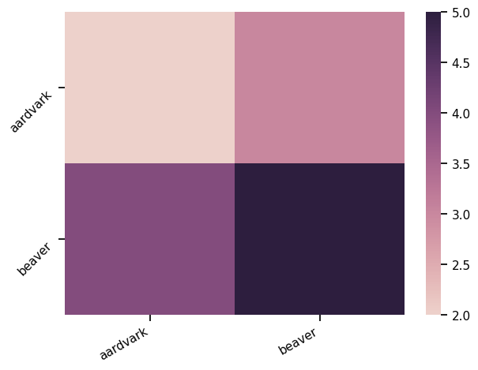
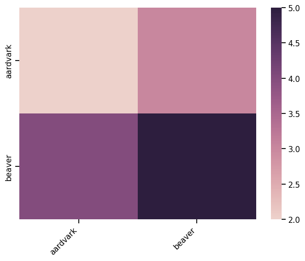
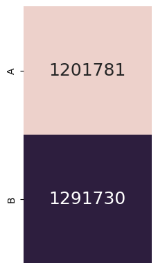
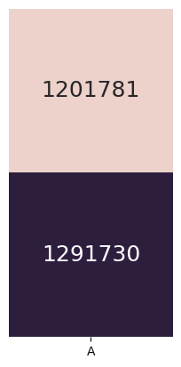

Notes
Notes¶
import numpy as np
from lisc.objects.base import Base
from lisc.collect import collect_counts
import seaborn as sns
from lisc.plts.counts import plot_vector, plot_matrix
import matplotlib.pyplot as plt
plot_matrix(np.array([[2, 3], [4, 5]]),
xticklabels=['aardvark', 'beaver'],
yticklabels=['aardvark', 'beaver'],
xtickrotation=30,
ytickrotation=45,
)

plot_matrix(np.array([[2, 3], [4, 5]]), xticklabels=['aardvark', 'beaver'], yticklabels=['aardvark', 'beaver'])
rotate_ticks(plt.gca(), xtickrotation=45.2)
# rotate_ticks(plt.gca(), 'y', 45)
# #rotate_ticks(plt.gca(), 'y', -45)
# #rotate_ticks(plt.gca(), 'y', 320)

ax = sns.heatmap(np.array([[2, 3], [4, 5]]))
ax.set_xticklabels(ax.get_xticklabels(), rotation=45)
[Text(0.5, 0, '0'), Text(1.5, 0, '1')]
from pathlib import Path
import numpy as np
from lisc import Counts, Words
from lisc.io.utils import get_files
from lisc.objects.counts import Counts1D
from lisc import collect_across_time
from lisc.io.db import SCDB
pp = SCDB('lisc_db')
pp.gen_paths()
pp.paths
{'base': PosixPath('lisc_db'),
'terms': PosixPath('lisc_db/terms'),
'logs': PosixPath('lisc_db/logs'),
'data': PosixPath('lisc_db/data'),
'figures': PosixPath('lisc_db/figures'),
'counts': PosixPath('lisc_db/data/counts'),
'words': PosixPath('lisc_db/data/words'),
'raw': PosixPath('lisc_db/data/words/raw'),
'summary': PosixPath('lisc_db/data/words/summary')}
years = [1950, 1960, 1970, 1980, 1990, 2000]
years = [1975, 1980, 1985, 1990]
years = [2001, 2002, 2003, 2004, 2005]
for y0, y1 in zip(years, years[1:]):
print(y0, y1-1)
2001 2001
2002 2002
2003 2003
2004 2004
aa = Counts1D()
aa.add_terms(['brain', 'body'])
bb = Words()
bb.add_terms(['brain', 'body'])
cc = Counts()
cc.add_terms(['brain', 'body'], dim='A')
cc.add_terms(['head', 'nose'], dim='B')
years = [1950, 1955, 1960]
aas = collect_across_time(aa, years)
/Users/tom/opt/anaconda3/envs/apm/lib/python3.9/site-packages/bs4/builder/__init__.py:545: XMLParsedAsHTMLWarning: It looks like you're parsing an XML document using an HTML parser. If this really is an HTML document (maybe it's XHTML?), you can ignore or filter this warning. If it's XML, you should know that using an XML parser will be more reliable. To parse this document as XML, make sure you have the lxml package installed, and pass the keyword argument `features="xml"` into the BeautifulSoup constructor.
warnings.warn(
aas[years[0]].counts, aas[years[1]].counts
(array([6094, 4615]), array([8061, 5765]))
aas
{1950: <lisc.objects.counts.Counts1D at 0x7f9767459e50>,
1955: <lisc.objects.counts.Counts1D at 0x7f976834bbb0>}
save_time_results(aas, 'test_save', 'test_save_file')
aas2 = load_time_results('test_save_file', 'test_save')
aas
{1950: <lisc.objects.counts.Counts1D at 0x7f9767459e50>,
1955: <lisc.objects.counts.Counts1D at 0x7f976834bbb0>}
aas[1950].counts
array([6094, 4615])
aas2[1950].counts
array([6094, 4615])
ccs = collect_across_time(cc, years)
ccs[years[0]].counts
array([[88, 5],
[ 5, 11]])
ccs[years[0]].terms['A'].counts
array([6094, 4615])
ccs[years[0]].terms['B'].counts
array([1264, 896])
aas[years[0]].meta_data
{'date': '2023-08-31_23:23:40', 'requester': {'n_requests': 3, 'wait_time': 0.3333333333333333, 'start_time': '23:23:40 Thursday 31 August 2023', 'end_time': '23:23:42 Thursday 31 August 2023', 'logging': None}, 'db_info': {'dbname': 'pubmed', 'menuname': 'PubMed', 'description': 'PubMed bibliographic record', 'dbbuild': 'Build-2023.08.31.18.14', 'count': '36148197', 'lastupdate': '2023/08/31 18:14'}, 'settings': {'db': 'pubmed', 'field': 'TIAB', 'mindate': '1950/01/01', 'maxdate': '1954/12/31'}, 'log': None}
aas[years[1]].meta_data
{'date': '2023-08-31_23:23:42', 'requester': {'n_requests': 3, 'wait_time': 0.3333333333333333, 'start_time': '23:23:42 Thursday 31 August 2023', 'end_time': '23:23:47 Thursday 31 August 2023', 'logging': None}, 'db_info': {'dbname': 'pubmed', 'menuname': 'PubMed', 'description': 'PubMed bibliographic record', 'dbbuild': 'Build-2023.08.31.17.13', 'count': '36148194', 'lastupdate': '2023/08/31 17:13'}, 'settings': {'db': 'pubmed', 'field': 'TIAB', 'mindate': '1955/01/01', 'maxdate': '1959/12/31'}, 'log': None}
aa.run_collection()
/Users/tom/opt/anaconda3/envs/apm/lib/python3.9/site-packages/bs4/builder/__init__.py:545: XMLParsedAsHTMLWarning: It looks like you're parsing an XML document using an HTML parser. If this really is an HTML document (maybe it's XHTML?), you can ignore or filter this warning. If it's XML, you should know that using an XML parser will be more reliable. To parse this document as XML, make sure you have the lxml package installed, and pass the keyword argument `features="xml"` into the BeautifulSoup constructor.
warnings.warn(
from lisc.plts.counts import plot_matrix, plot_vector
aa.counts
array([1201781, 1291730])
plot_vector(aa.counts, labels=['A', 'B'])

plot_vector(aa, xticklabels=['A'])
